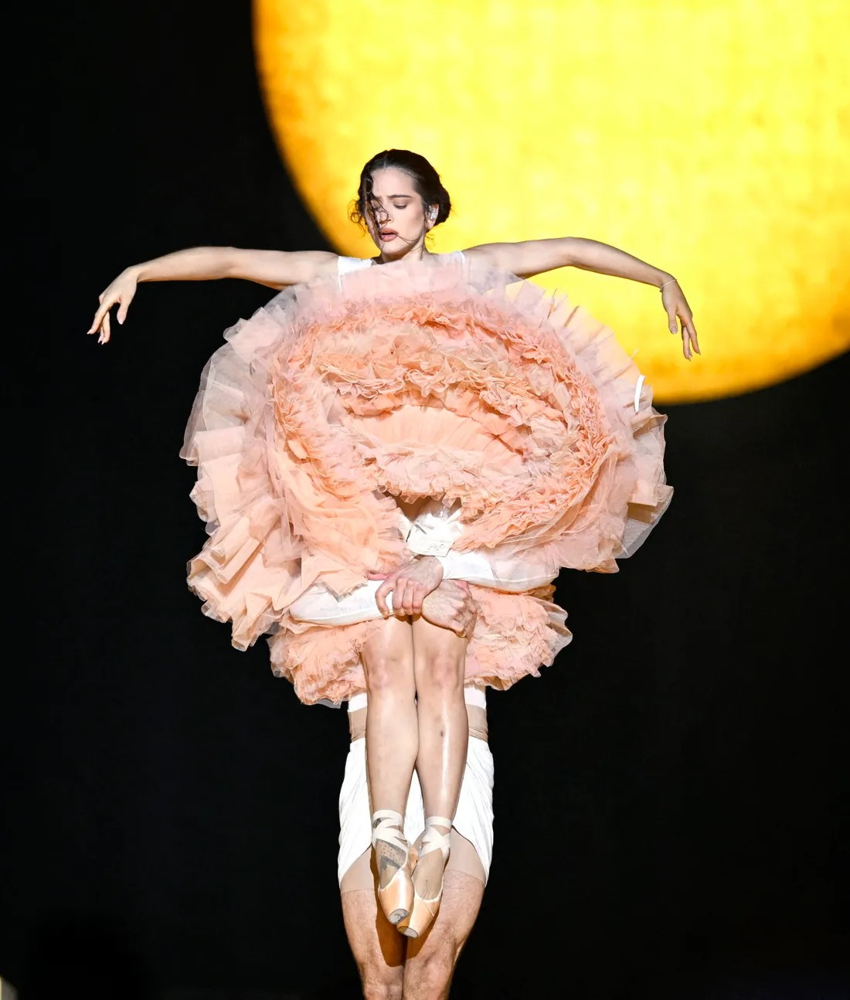
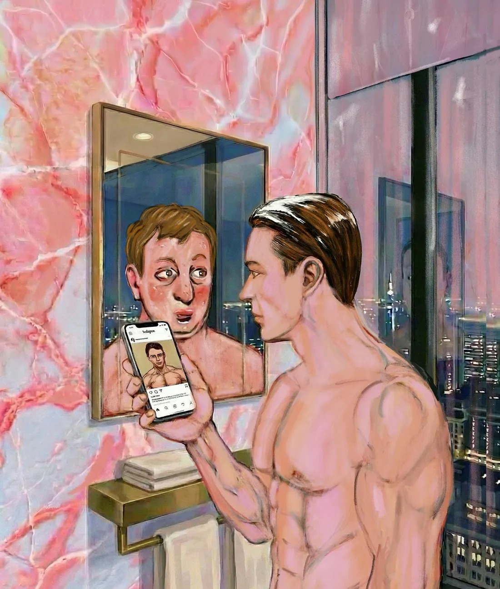
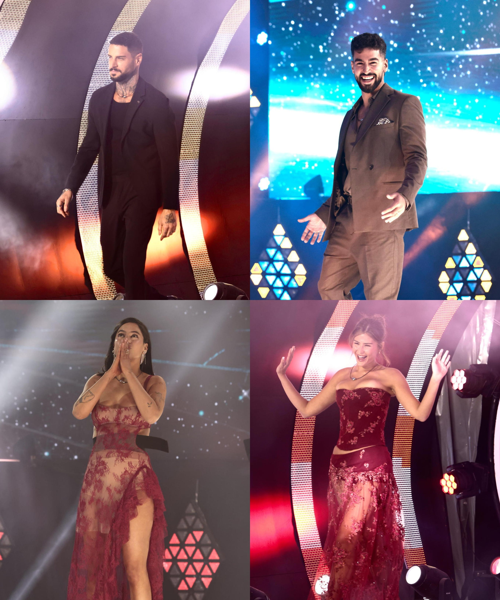
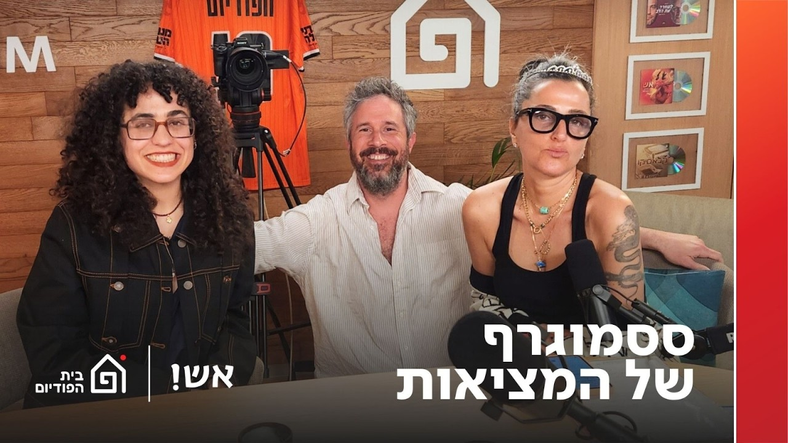
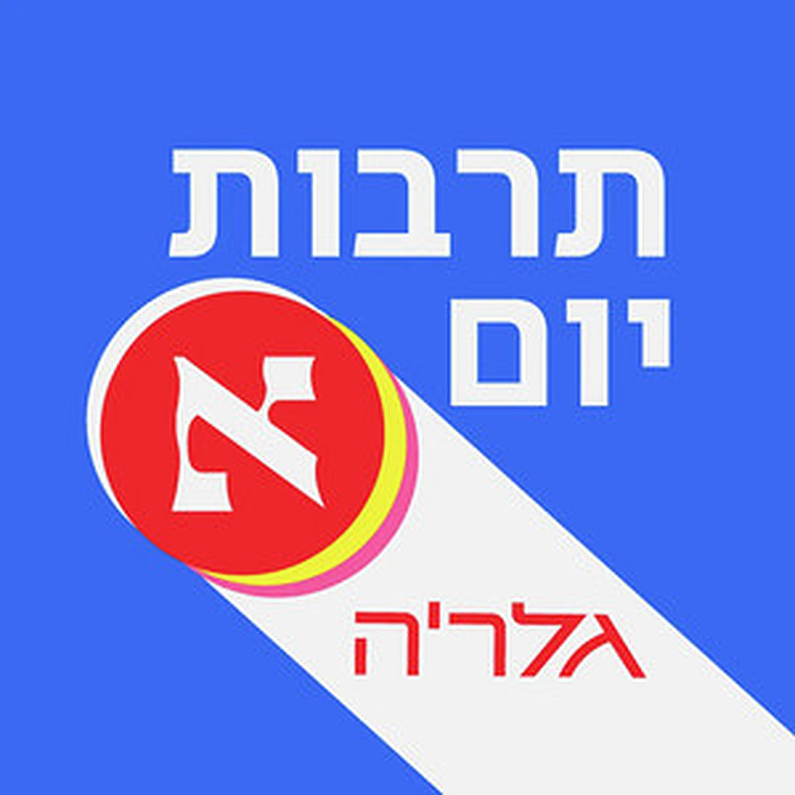
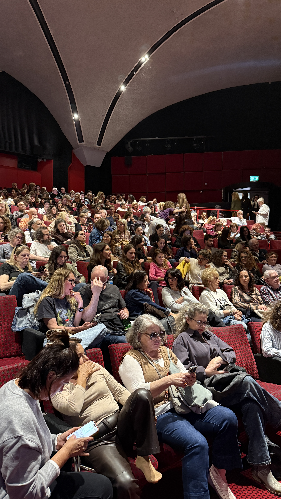
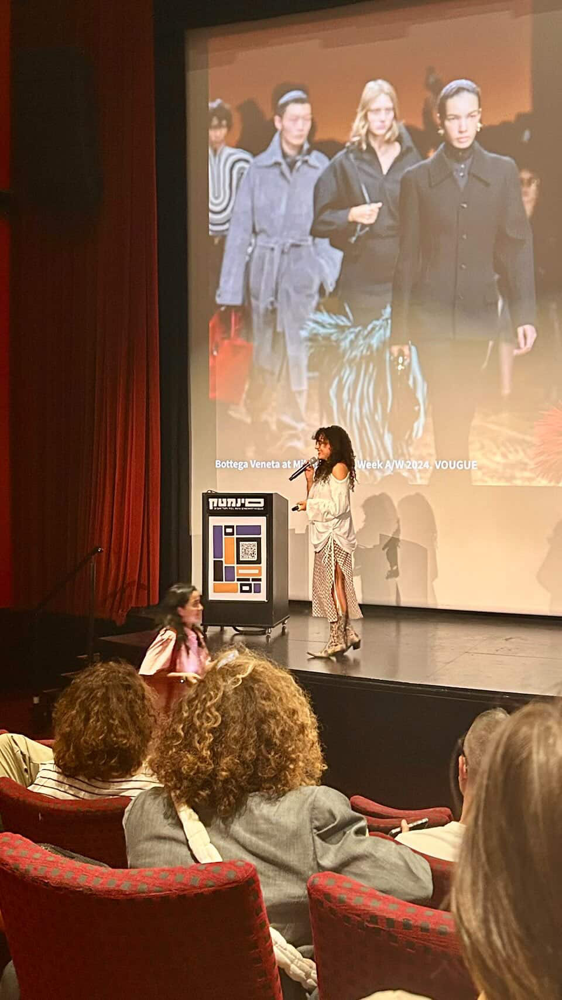

2.2אני חוקרת וכותבת על אופנה ותרבות, עם עין חדה למה שבגדים, מסכים ותמונות מספרים עלינו. בין תיאטרון האופנה הגלובלי לבין מה שבאמת קורה כאן, ברחוב — כותבת, מרצה ומתראיינת, בלי להתנשא ובלי להתנצל.
עיתונאית ״הארץ״, חוקרת אופנה ותרבות חזותית

צילום: Gareth Cattermole / Getty Images

צילום: רן יחזקאלאני מתראיינת ומדברת בתוכניות ופודקאסטים ויוצרת תוכן לסושיאל

פודקאסט
פודקאסט
כאן11
כאן117.1יצירת קשר
7.2בואו נדבר